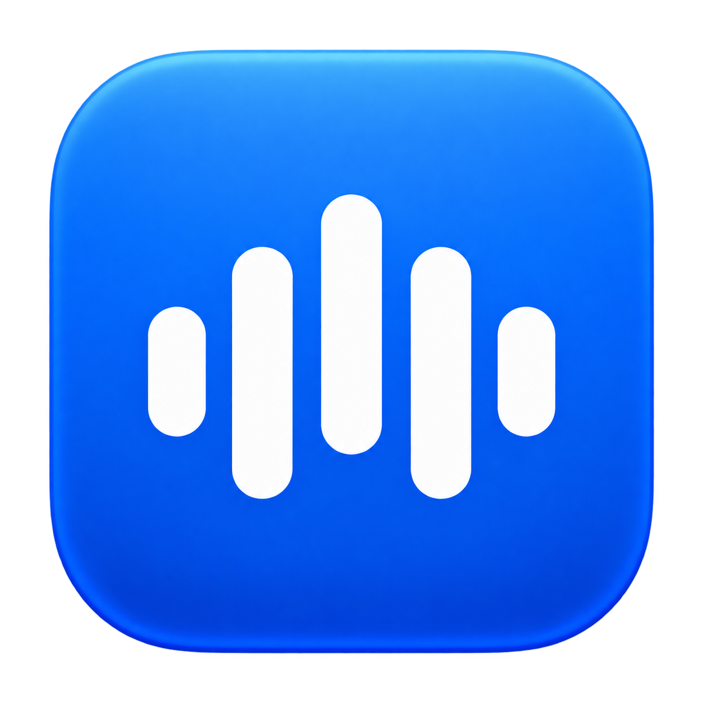
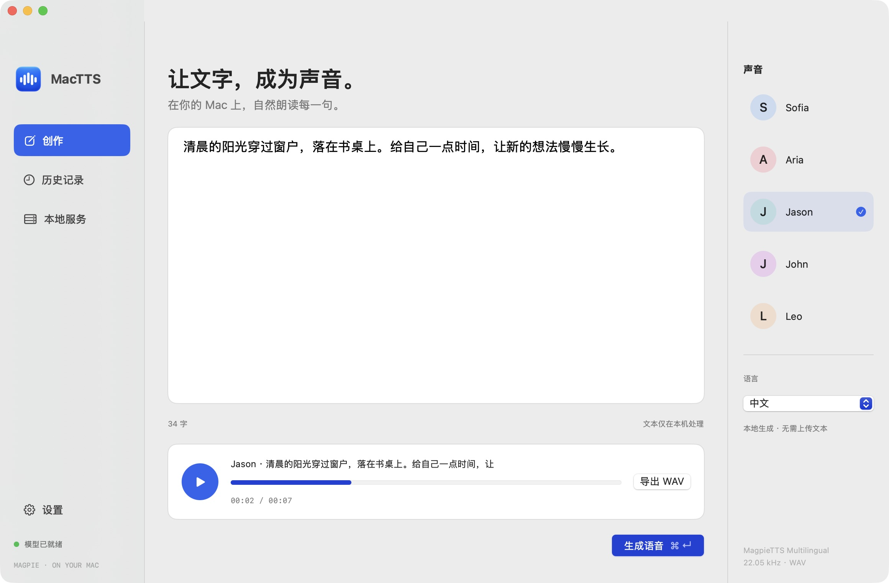

拖入「应用程序」
下载并打开 DMG，将 MacTTS.app 拖到 Applications，再从应用程序打开。
版本说明与 SHA-256 ↗仅支持 M 系列 Mac。最低部署目标 macOS 14，旧版本系统尚未逐一实机验证。

MacTTS0.4.0从一段文稿，到一次 Agent 对话。
把文字变成声音，边生成边播放，随时打断。
Apple Silicon · macOS 14+ 构建目标 · 早期测试版

01 / 听见文字
在创作页输入文字，选择音色与语言。
回听文稿，保存历史，导出一份 WAV。
模型在本机生成，文本无需上传。
以下为实际生成样本。发音与自然度会随文本、语言和音色变化。
“你好，这是在我的苹果电脑上运行的本地语音服务。”
“Hello. This is Mac TTS, running locally on this Mac.”
中文 / 英语 / 日语 / 韩语 / 法语 / 德语 / 西班牙语 / 意大利语 / 葡萄牙语 / 越南语 / 印地语 / 阿拉伯语
02 / 对话会继续
开启流式自动播放，音频块到达后立即播放。
点击取消，或让新回复打断同通道的旧回复。
Agent 接入时，按句提交完整文字。
当前流式能力用于音频输出，尚不接收逐 token 追加文本。
03 / 从这里开始
DMG 包含应用、语音引擎与语言前端。
模型单独下载，不需要 Python 或 Node。
下载完整安装指南 ↗
下载并打开 DMG，将 MacTTS.app 拖到 Applications，再从应用程序打开。
版本说明与 SHA-256 ↗仅支持 M 系列 Mac。最低部署目标 macOS 14，旧版本系统尚未逐一实机验证。
首次生成会自动下载。推荐先在终端运行下方命令，看到完整进度。DMG 也附有「下载模型.command」。
"/Applications/MacTTS.app/Contents/Resources/runtime/bin/nemo-speech" pull magpie必要下载约 647 MiB，建议预留 2 GB 磁盘空间。下载完成后可离线生成。
选择音色与语言，点击「生成语音」。在设置中开启「生成时自动播放（流式）」，即可边生成边听。
首次加载需要等待。模型就绪后的后续生成会更快。
内置命令自动准备固定版本，并校验 SHA-256。
缓存位于 ~/Library/Caches/NeMoSpeech/models/。
04 / 接入你的工作流
终端脚本、MCP 客户端和 Agent，
共用同一个本地服务与模型。
按需唤醒，按通道管理对话。
直接运行应用内的原生命令，或用 DMG 中的脚本安装 mactts 入口。
"/Applications/MacTTS.app/Contents/MacOS/mactts-cli" \
speak "你好，这是新的回复。" \
--stream --play --channel agent --interrupt使用同一入口执行 cancel --channel agent 可停止该通道。音频默认保留 7 天，可用 clean --dry-run 预览清理。
将以下配置添加到支持 stdio MCP 的客户端。提供朗读、取消、状态与清理等 9 个工具。
{
"mcpServers": {
"mactts": {
"command": "/Applications/MacTTS.app/Contents/MacOS/mactts-cli",
"args": ["mcp"]
}
}
}MCP 2025-06-18 / stdio。stream=true, play=true 在本机边收边播，工具结果返回文件信息。首次模型加载请保留足够超时。
打开应用或启动 CLI 服务后，向本机接口发送完整文字。返回 PCM16 的 SSE 事件。
curl -N http://127.0.0.1:8877/mactts/stream \
-H 'Content-Type: application/json' \
-d '{"input":"你好，世界。","voice":"Sofia","language":"zh","channel":"agent","interrupt":true}'仅监听本机。完整 WAV 可使用 POST /v1/audio/speech。阅读流式事件、取消与队列协议 ↗
安装前，你可能想知道
当前是 ad-hoc 签名的早期测试版，尚未经过 Apple 公证。确认来自本页的 GitHub Release 后，先尝试打开一次，再在「系统设置 → 隐私与安全性」按系统提供的「仍要打开」流程操作。无需关闭系统安全机制。若提示文件损坏，先重新下载并校验 SHA-256；仍失败请反馈。Apple 官方说明 ↗
先在终端运行 pull magpie，失败后可重试并复用完整文件。需要代理时，在命令前设置 https_proxy 为自己的代理地址。应用会尝试读取系统 HTTPS 代理；终端使用环境变量。完整命令与排查步骤 ↗
合成在本机运行，文本与生成音频保存在本地。首次模型下载会访问 Hugging Face；产品页的试听使用预先生成的静态音频。全部模型资源准备完整后可以离线使用应用。
当前支持音频输出流式，每次请求仍需要完整文字。请按句切分 LLM 输出后依次提交。一个模型工作区按 FIFO 推理；不同通道用于取消隔离，同通道的新请求可通过 interrupt=true 打断旧生成和播放。
CLI/MCP 的默认缓存保留 7 天，在下次生成前清理，也可以手动执行 clean。显式导出的文件与应用历史不会被自动清理。应用数据与模型目录、保留天数设置都见安装指南。
模型按各自 NVIDIA Open Model License 使用，下载前可查看上方官方模型页。应用附带 NeMo-Speech.cpp 及第三方许可证。当前为早期测试版，支持 5 个预设音色；尚无声音克隆、自动更新和分发公证。旧系统与其他芯片的实际表现需要继续验证。
Apple Silicon · DMG 不含模型 · 早期测试版